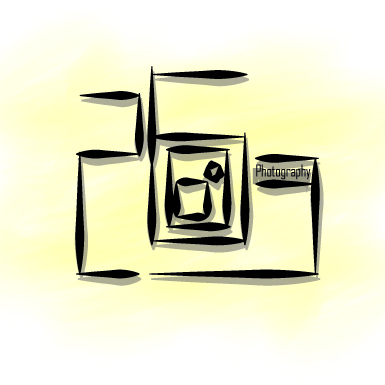
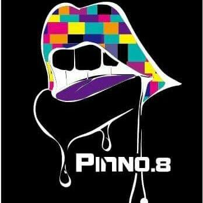

自治性社團
學生自治會
學生和校方的溝通窗口、學生權益的維護，以及眾星閃耀的演唱會及名人講座。想有不一樣的大學生活，了解潛能的極限嗎？學生會等你和我們一起，畫出精彩的大圓！
集社時間&地點
星期一至四 19:00-21:00 GA209
想對YunTech新鮮人說
想要有與眾不同的大學生活嗎？學生會八大部門─活動部、公關部、學權部、美宣部、新聞部、財務部、總務部、秘書部等你來挑戰，尋找青春的寶藏！
學生宿舍自治委員會
宿委會是一群擁有極大服務熱忱的同學組成，我們的宗旨是服務住宿生，解決他們的問題，另外我們也會舉辦許多娛樂活動回饋給住宿生，邀請大家來同樂。
集社時間&地點
想對YunTech新鮮人說
如果你也有一顆服務的心，或是你想學習如何籌備活動，歡迎加入我們！
學生饍食自治委員會
平時社課做小點心主打烘培系列不管是布丁、蛋糕還是餅乾都難不倒我們喔
集社時間&地點
每週四晚上七點學膳會會辦（宿委會對面）
想對YunTech新鮮人說
歡迎雲科所有喜歡烘焙喜歡吃喜歡玩的帥哥美女來加入我們學膳會我們是一個溫馨又和諧的大家庭還不快來嗎
學藝性社團
攝影社
雲科大攝影社擁有26年經驗的團隊，專業兼活潑的攝影社，在一群擁有攝影魂的幹部帶領下，致力於推廣攝影觀念與美學，藉此讓雲科大的學生喜愛攝影，認識攝影。
集社時間&地點
每周三晚上7:00到9:00 活動中心GA201

想對YunTech新鮮人說
喜歡攝影嗎?如果你也和我們一樣愛好攝影，不必擔心沒有好設備和經驗，加入我們雲科大攝影社和我們一同學習攝影的點點滴滴，別懷疑，來就對了，社博攤位4號，等你來參加喔。
陶藝社
承接了歷代學長姐的專業知識和經驗，我們有專業的設備跟豐富的資源，可以體驗手拉坯、各種手捏技巧、陶板創作以及上釉技法，期許能為大家帶來最棒的創作空間。
集社時間&地點
每個星期二、四晚上7點~9點，在GAB104(活動中心地下室)
想對YunTech新鮮人說
不論是對陶有興趣的你、已經有玩陶經驗的你、對陶土很陌生但是很好奇的你，或只是想要交交朋友的你，都歡迎來陶藝社找我們玩哦！
信望愛社
這是一個由有基督信仰的同學所組成的社團，平時集社時會一起唱詩歌、玩遊戲、分享信仰與生活相關的信息，並且會舉辦一些活動和營隊，歡迎任何有興趣的同學參加。
集社時間&地點
每週四晚上7:00~9:30，在活動中心二樓GA242茶道教室
想對YunTech新鮮人說
同學同學看這邊~~~~~~想知道如何保持生活happy的秘訣嗎？想過個可以好好做個真實的自己的生活嗎?在碰到困難無助的事情時不知道該怎麼辦嗎?這裡有一個天大好消息，想知道答案的話就來信望愛社一趟吧!!!Life is a struggle,but God he’s struggle with you!!!
築藝花卉設計社
想知道怎麼做出動人的傳情禮物，送給那個心儀的 她/他 嗎？想要充實自己的寒暑假 ，一起帶營隊嗎?加入築藝大家庭 非你莫屬～～！！！
集社時間&地點
每周三晚上7:00~9:00 地點 GAB 106
想對YunTech新鮮人說
想要更深入了解我們嗎？歡迎來築藝社辦 ＧＡ２１７找我們哦最重要的是，好玩的築藝社博遊戲、抽獎正等著你 快來吧 ＝）
福智青年社
福智青年社由一群瘋狂、有理想的幹部組成，強調多方面發展及一群可以談心的好朋友，永遠給你家的感覺，誠摯邀請您和我們共享幸福歡樂的心靈之夜。
集社時間&地點
集社時間：每週一晚上7：00~9：00 集社地點：活動中心一樓GA107 社辦位址：活動中心二樓GA222
想對YunTech新鮮人說
精心安排大學最需要的時間、情緒、人際管理、全校蔬食展、福青土屋社遊及大專班等課程，每週還有社員及與教師的聚餐，維繫社團感情，重點是不強制繳交社費喔~*社博會在19攤位，表演第9場 Yeap*
櫻華社
看到櫻華社應該會想到櫻花，想到櫻花就會想到日本，想到日本有些人應該會想到宅文化，櫻華社就是以日本文化+宅文化研究為主題的社團，希望大家加入後可以對日本文化有更加的了解
集社時間&地點
每周三晚上7:30~晚上9:00 GA242
想對YunTech新鮮人說
從以前就很喜歡動漫或是玩cosplay嗎？找不到同好嗎？櫻華社將會是你最佳選擇
咖啡文化研習社
咖啡研習社是由一群熱愛咖啡文化的夥伴們所組成，我們希望讓來到社課的人能透過親手煮一杯咖啡來認識咖啡本質，並更一進步發展出各式各樣的創意咖啡(愛爾蘭咖啡、拿鐵、鴛鴦咖啡..)來改變人們對於咖啡既苦又澀的刻板印象。
集社時間&地點
每周二晚上19:00~21:00，雲科咖研社在GAB106歡迎您
想對YunTech新鮮人說
雲科大的新鮮人們~~~快來一同學習咖啡文化、享受咖啡香吧!!!我們的社團博覽會攤位是43號哦，歡迎來認識我們!
法輪大法社
一群以「真、善、忍」為做人準則的青年學子，希望藉由社團的活動，讓參與者了解「真、善、忍」內涵與生活的連結，期盼正的力量更能讓心靈健康。
集社時間&地點
集社時間地點依社團公告為準
想對YunTech新鮮人說
哈囉~各位新生，我們在社博舞台左側擺攤喔！歡迎大家來認識我們的社團~
佛學社
國立雲林科技大學-佛學社於民國96年在指導老師與指導師父胼手胝足成立下，發願建立佛學社以啟學子學佛之路，一路走來秉持佛陀慈悲喜捨致力推廣耕心教育理念，在社團裡，我們每個人都可學習到「如何帶給別人快樂、如何分擔別人的煩惱、如何發自內心擁有歡喜心、如何將自己擁有的智慧與別人分享，更重要的是學習到多方面的知識經驗與技能」，結合「師父獨有的心靈生命教育方式」，讓所有前往佛學社的每一位成員都能夠逐漸「親近本我、發心行善、勇於面對」。本社團已嘗試舉辦許多不同活動，以期許能夠落實佛法中「信、願、行」的精神，其中最具代表性的活動為5月份的母親節感恩活動，其中意涵為「一切行善，孝順為先。」我們透過影片、撰寫卡片等方式，來回想母親為我們生活付出的點滴，並表達我們的感恩之情，期望自己不忘本，懂得感恩是學習的開始。
集社時間&地點
時間：每週三 早上10點 地點：仁義社辦
想對YunTech新鮮人說
來到佛學社，我們每個人都可學習到「如何帶給別人快樂、如何分擔別人的煩惱、如何發自內心擁有歡喜心、如何將自己擁有的智慧與別人分享，更重要的是學習到多方面的知識經驗與技能」，歡迎您一同來體驗
塔羅牌研習社
我們是一群擁有東方神秘力量的人，我們相信我們手握著的牌，一牌在手希望無窮，幫助生活中遇到頻頸的人們，社團不定期聚餐，好料吃不完，想要在大學學習不一樣的興趣嗎?想要成為與眾不同的人物嗎，快來加入我們吧!
集社時間&地點
星期一晚上19:00~21:00 GAB106
想對YunTech新鮮人說
在學習大學必修四學分，課業、社團、愛情、打工，過程中有遇到困難，歡迎你來找我們，塔羅牌會帶領你了解問題所在，幫助你解決困難，大學中有著各式各樣千奇百怪的社團等著你，想要在大學中找到屬於自己的另一個家嗎？想要在大學學習不一樣的興趣嗎？想要成為與眾不同的人物嗎，快來加入我們吧!
大願禪學社
禪即是清淨，我們跟著教授法師學習定心，讓身心靈沉靜。
集社時間&地點
每周三12:00~13:00 GA106
想對YunTech新鮮人說
你好!每周三12:00~13:00 準時開始社課! 午餐由精舍無私免費提供，隨時都歡迎各位來與我們結緣喔~
荒野保育社
荒野保育社絕非只是去保護荒野！我們除了上有關於動植物外的課程，還有許多手做課程，讓我們一起豐富大學生活吧！
集社時間&地點
每個禮拜一，19:00~21:00
想對YunTech新鮮人說
在雲科眾多社團內，如果你想做一些可愛的手做，或者更加了解動植物，那荒野保育社絕對是你的第一選擇！也不用煩惱上社課時會不會熱，或者被蚊子叮，荒野保育社絕對是你的第一選擇！
機械動力研究社
喜歡騎車嗎？想讓騎乘技巧更上一層樓嗎？或想透過DIY來認識自己的愛車嗎？ 加入機研社，學習更豐富的汽機車知識外，一同熱血騎車出遊，走遍好山好水，讓自己與愛車有很不一樣的價值！
集社時間&地點
每周四晚上６：３０～６：４５雲科大校門口集合 (騎機車)
想對YunTech新鮮人說
趕快加入機研社一起來研究你的愛車，好好培養人與車的感情吧！
印心社
印心大家庭，歡迎新生們一同來體驗靜坐美好與平靜，讓心回到原點，不讓成長路上的汙濁，干擾本心，並一起在這個社團裡，遇到一群很溫暖的人，並在過程中，一同完成很有意義的事情，印心社陪伴你的領袖路。
集社時間&地點
集社地點:GA218(活動中心2樓)
想對YunTech新鮮人說
新生們大家好~我們是印心社~~印心陪你當王者，印心讓你當領袖，印心讓你成英雄！想再大學生涯當中找到值得奮鬥的目標嗎？想結交到一輩子的好朋友嘛？想讓自己變的價值連城嗎？想體驗內在真正的寧靜嗎？讓印心社藉由靜坐讓你找到最寶貴的自己!!
如來實證社
雲科如來實證社是一群志同道合的雲科學子因體會入到 明師座下禪行的美好而成立，透過禪行開啟本自俱足的如來智慧，面對課業、感情、人際、家庭等等無不隨順圓滿。
集社時間&地點
想對YunTech新鮮人說
哈囉~~各位新生好，我們社團47號擺攤唷，歡迎來認識我們如來實證社 :)
康樂性社團
國樂社
對中國古代武俠戲劇中氣勢磅礡的樂章深深著迷嗎？想要體驗傳統東方樂器與現代流行音樂碰撞出毫無違和感的新火花嗎？不局限於優雅及雄壯的東方古典樂，更融合於現代流行樂元素交織出新篇章正是思筑樂坊的宗旨和樂趣所在。歡迎對音樂有興趣的朋友們一起來參與及見證音樂跨越年代、類別、與國界的美妙魔法吧!
集社時間&地點
星期三19：00~21：00 活動中心GA332(雲院書城上方三樓)
想對YunTech新鮮人說
思筑樂坊，擁有一群熱愛國樂的夥伴。不要害怕沒學過樂器，我們都會有熱情的學長姐教學。也請有學過樂器的同學，不要放棄國樂夢，讓我們一起築起更強的國樂魂吧!社團博覽會表演順序第24個，也請大家來面對舞台右手邊的社博攤位走走喔!!!
管樂社
雲響管樂社顧名思義便是想將樂音響遍雲林地區，讓從台灣各地來讀書的朋友們能夠認識管樂並享受管樂器發出的美妙聲音。
集社時間&地點
集社時間：每周一、二 19:00~21:00 集社地點：GA331 (雲院書城3樓)
想對YunTech新鮮人說
想訓練你的「嘴上功夫」嗎？想增強你的「手指速」度嗎？想跟「啤酒肚」說掰掰嗎？想擁有「一目十行」的能力嗎？那就快到GA331找我們吧！我們不是健身房，是「雲響管樂社」！！！歡迎熱愛管樂、對管樂有憧憬的你加入！我們的社博攤位號碼是8號~
民謠吉他社
吉他社是由一群喜歡音樂的朋友組成的大家庭，我們會定期舉辦音樂會，分享彼此的音樂故事，而我們平常在每週二的社課外，還有爵士鼓教學，歡迎大家加入吉他社吧!
集社時間&地點
每週二晚上19:00~21:00 地點在活動中心GA132
想對YunTech新鮮人說
我們吉他社社博攤位就在OO號，當天我們會在旁邊的小舞台會有一連串精彩的音樂表演，喜歡音樂或是想要加入吉他社的朋友們，千萬不要錯過吉他社的攤位喔！
登山社
這是一個沒有暴力溫馨的地方，登山攀岩加溯溪，大家一起出來玩，Welcome~
集社時間&地點
每周四19:00 GA200
想對YunTech新鮮人說
讓雙眼成為你的相機，讓足跡寫下你的記憶，讓我們一起縱情山水、探索秘境
雲大合唱團
雲大合唱團已歷經18個歲月，在現任指導老師吳孟樺帶領下，由傳統和聲，逐漸朝Acapella方向發展，年度重大活動有迎新、情歌大賽、團慶、成果發表會、六社音樂會…等活動
集社時間&地點
每周一、周四19:30~21:30 每周二社辦值班
想對YunTech新鮮人說
唱歌。是一件令人放鬆、快樂的事情，如果你也有相同的感受，那就趕緊加入雲大合唱團吧！那怕是沒樂理沒音感，只要有熱忱都能學好唱歌！另外提供吉他鋼琴伴奏教學
網球社
我們是一群熱血的青年，在網球場上和夥伴們揮灑青春的汗水、創造熱血的回憶，想要加入我們，就在星期一、星期三晚上18:30~21:00來紅土網球場報到吧!
集社時間&地點
每週一、三晚上18:30~21:00 紅土網球場
想對YunTech新鮮人說
活力、熱血是我們的象徵，紅土球場上奔馳的身影與青春的吶喊是我們的代表，每一次揮拍是夢想的開始，青春就在網球場上。想成為熱血陽光的大學生就加入網球社吧！
溜冰社
你以為我們只是溜來溜去而已嗎？不！溜冰社有花式溜冰、煞車還有曲棍球。還能帶你天上飛、地上玩、全臺溜透透 。你，心動了嗎？那就快來加入溜冰大家庭吧！讓我們天天玩在一起！
集社時間&地點
時間：每個禮拜二、四晚上6:30-9:00 地點：溜冰場
想對YunTech新鮮人說
想就去做吧！不要害怕跌倒，跌倒才能使你成長，就像溜冰一樣，從哪跌倒就從哪裡再站起來。社博，學餐前柏油路，等你來試溜。FB請搜尋：雲溜俱樂部。
國際標準舞研習社
大家好，我們是國際標準舞研習社!很多愛跳舞的朋友們都聚集在這裡，學習各式各樣優美的舞蹈，利用肢體表達情感，享受跳舞的快樂，更能了解和舞伴的默契培養與互動，加入國標社是你自信亮眼的第一步!
集社時間&地點
禮拜一跟禮拜四 晚上七點到晚上九點
想對YunTech新鮮人說
加入國標社是你自信亮眼的第一步!
熱門舞蹈社
雲科熱門舞蹈社成立至今已經到第十六屆，主要舞風以hiphop、girl style為主。 我們積極的參與各種校內外的舞蹈活動（迎新、期末社聚、六社舞展、成果展），讓所有參加熱舞社的人都有機會表現自己的學習成果，另外並聘請來自台北舞蹈工作室的專業指導老師，讓社員們有更佳良好的學習環境。我們提供了一個練舞的環境，希望可以讓社員們盡情的學舞，藉著音樂、舞步好好的表達自我。 我們希望能把跳舞的基礎、概念等傳授給社員們，奠定跳舞的正確觀念，並鼓勵社員們多積極參與團體的活動，不只是要強化跳舞的技能，更是要增進社員之間和與社團間的關係互動。
集社時間&地點
每周二跟四 晚上19:00~21:00 體育館韻律教室/GAB101
想對YunTech新鮮人說
只要你喜歡跳舞，對跳舞有興趣，聽到音樂會想動動身體，歡迎你加入雲科熱門舞蹈社!! 我們社團博覽會在30號攤位，表演是倒數第二個，歡迎來看我們喔 :)
有氧舞蹈社
藉由有氧舞蹈，紓解壓力、帶給身心健康，以及學習各種氧種舞蹈風格，享受舞蹈過程、享受有氧節奏，充實自己，愛上自己！
集社時間&地點
每周二晚上7:30 GAB101
想對YunTech新鮮人說
想在舞臺發光發熱嗎？想在大學來點不一樣的嗎？想在青春留下美好的回憶嗎？快給自己一個機會，來有氧舞蹈社就對了，有氧就缺你一個！
單車社
雲科學生除了讀書之餘，常常會利用時間運動，想要體驗熱血又難忘的時光嗎?一起加入雲科大單車社吧!!帶你走遍全台灣!!
集社時間&地點
周四晚上7:00~9:00 GA247
想對YunTech新鮮人說
一群對單車有熱血的青年，不管事新手級或是專業級，就在社博17號攤位17熱血一下吧!
劍道社
我們社團以學習劍道技巧為目標，訓練過程中，不僅可以強健體魄，還能防身。我們也會與其他社團一起舉辦活動可以與各個社團互相交流，認識大家，社員們會定期舉行友誼賽，如果有機會可以積極參加比賽，為校爭光，讓更多人知道劍道社。
集社時間&地點
每週二晚上7點～晚上9點，活動中心二樓
想對YunTech新鮮人說
歡迎各位一起來體驗看看唷！每次練習一起來揮灑汗水、燃燒脂肪、訓練肌耐力,不僅保持你最棒的身材、身體也會更健康。
棋藝社
棋藝社為喜歡下棋的同好者，提供一個以棋會友可供研究與學習的社團。訓練思考及邏輯能力，充實人文素養，達到「科技與人文」並重。現有專職的圍棋教師擔任老師。
集社時間&地點
社課：每周二晚上七點GA244。聯合社辦GA253。
想對YunTech新鮮人說
不管是受到AlphaGO還是棋靈王的吸引，只要你對圍棋有興趣或是曾經學過圍棋，棋藝社都歡迎你們到來。社博當天在攤位33也有設攤，歡迎交流小試身手及探聽訓練活動規劃。
魔幻社
想知道魔術的奧妙與神奇,並且帶給大家歡樂,又想享受燈光下的掌聲及眾人的矚目魔幻社是你圓夢的好機會
集社時間&地點
每周二19:00-21:00 / GA242茶道教室
想對YunTech新鮮人說
有些事做了會後悔一陣子,但不做會後悔一輩子,社團是你大學很好的家,我們社博攤位是31號大家趕快來
拳擊社
以運動、防身為主要目的，另有專業教練指導拳擊基本技巧。有沙包、拳套等設備配合訓練。
集社時間&地點
星期一、三晚上6:30~9:00，活動中心2樓東側
想對YunTech新鮮人說
參加社團不要有壓力，課業壓力都已經夠大了，當作運動或交朋友也歡迎來拳擊社，當然想學點防身的最歡迎～
撞球社
哈囉^^我們是撞球社，我們每周三晚上都會在體育館集社唷，平時也會出沒在站前的世紀撞球館，期待大家球技都能更上一層樓~
集社時間&地點
每星期三於體育館二樓撞球室 晚上6:30-9:00
想對YunTech新鮮人說
無論你是否會打撞球，也不論妳是否了解撞球的規則！都歡迎你/妳加入我們的行列，一同參與這臺灣戰績輝煌的運動項目喔！

鋼琴社
鋼琴社於每週三設有社課大班教學，讓初學者也能夠快速上手鋼琴；而每週一到五晚上也會安排個別教學課程，讓有學琴經驗的人也能精進與交流琴技~
集社時間&地點
每週三晚上7:00~9:00(大班教學)，幹部值班時間 : 週一到週五晚上於鋼琴社社辦 社辦地點：活動中心GA250
想對YunTech新鮮人說
哈囉雲科新鮮人～想要聆聽優美的琴聲？！ 想要學習躍於指間的動人旋律？！ 無論是初學鋼琴、琴技交流或想吃宵夜，只要來鋼琴社一定能燃起你對音樂的熱情！！
射箭社
射箭不僅能鍛鍊身體，還能訓練自己的專注力，並且讓自己的心情得到平靜。你也想穿著帥氣的裝備迷倒大家嗎?快來加入我們吧。
集社時間&地點
星期一19:00~21:00 星期三10:00~12:00 體育館地下一樓射箭場
想對YunTech新鮮人說
哈囉各位新生，我們的社團博覽會攤位在10號喔，我們有好玩的遊戲和小禮物，一起來體驗射箭吧。
FUNK舞蹈社
Level‧4
屬性：Popping & Locking & Breaking
技能：電流 & 鎖定 & 轟炸
出沒地點：GAB101
出沒時間：每周三晚上7點
捕獲機率：87%
歡迎到活動中心地下室巧遇我們~
集社時間&地點
每周三晚上7:00~9:00 GAB101
想對YunTech新鮮人說
不管你有沒有接觸過舞蹈只要想學、想跳舞、想享受Spot Light的感覺隨時歡迎找我們一起跳舞!!!
競技啦啦社
熱情、活力、青春洋溢就是我們的寫照，我們總是在舞台上散播歡樂的種子，雲科中最具特色的社團就是我們──競技啦啦社。
集社時間&地點
每週一及週四、晚上6:30，我們在活動中心二樓東側等你一起來當空中飛人喔~~
想對YunTech新鮮人說
厭倦了讀書的日子，這裡絕對是你的第一首選~~加入我們吧！啦啦社讓你體驗到不曾感受的新鮮與刺激喔！9/7(三)社團博覽會、水塔前廣場，聽覺與視覺的震撼饗宴，你不容錯過喔！
王牌主持社
培養對於主持能力、說話技巧有興趣的人才，彼此交流切磋，找出個人魅力！
集社時間&地點
每周一 19:00-21:00 GAB105
想對YunTech新鮮人說
哈囉～大家好！我們在社團博覽會的9號攤位喔！另外，社博的舞台上也看的到主持社的身影唷！王牌主持社，歡迎你們來參加！
戲劇社
透過戲劇的方式，展現自己吧！想要瘋狂的表演不再只是夢想！戲劇社為你提供一個漂亮的舞台！和戲劇社一起瘋狂玩戲劇吧！
集社時間&地點
每周一晚上19:00-21:00 GA132
想對YunTech新鮮人說
社博攤位在：門口左側第四攤！想學會怎麼展現自己嗎？想學會怎麼演戲、撰寫劇本、影片剪輯嗎？想在生活中增添樂趣嗎？戲劇社迎新在9/12，與你一起瘋狂玩戲劇！
熾舞社
大家好~我們是熾舞社全校唯一能夠用火的社團還有著專業火舞團老師的指導更能認識外校火舞社及其他火舞者呢每週二下午七點到九點， 活動中心二樓西側中庭等你來喔
集社時間&地點
每週二下午7點到九點， 活動中心二樓西側中庭 另外有不定時的團練喔
想對YunTech新鮮人說
有想要一個不一樣的大學生活嗎？那就加入全雲科唯一玩火玩到專業的社團吧！不僅能有特殊的體驗，獨一無二的大頭照，還會培訓大家參加街頭藝人考試 雲科Yuntech熾舞社等你一起來GO FIRE
原住民青年社
我們是一群熱血的大學生，熱愛原住民文化，我們聚集在一起，傳承美麗的文化，無論是不是原住民，無論是不是來自部落，都歡迎加入這個家庭，一起認識及傳承原住民文化。
集社時間&地點
星期一晚上7:00-9:00
想對YunTech新鮮人說
不管是不是原住民都可以來參加哦！我們社博攤位在２２號，歡迎一起來玩唷！
中華武藝研習社
想要帥氣的表演嗎？想成為武林高手嗎？中華武藝研習社歡迎所有對中華武術有興趣的同學。
集社時間&地點
每周一晚上7:00~9:00在GAB108，每周三晚上6:30~8:30在柔道教室
想對YunTech新鮮人說
各位新生大家好，我們社博攤位在41號是社博的第二個表演，歡迎來逛攤位跟看表演喔！
生存遊戲社
玩SF，CS或AVA等FPS遊戲已經覺得不夠，想親身體會決勝時刻，戰地風雲那種在砲火間的戰術和交戰嗎？或是一直想當戰爭動作片的英雄大兵，破門、在建築間游擊或是解決公寓中的狙擊手嗎？對槍械有興趣，但又礙於方法和實地操作嗎？馬上加入"國立雲林科技大學 生存遊戲社"這裡絕對是你的家~~~~~~~~~(･ิω･ิ)
集社時間&地點
星期一 晚上7:00 GA253集合
想對YunTech新鮮人說
歡迎新生 讚嘆新生 感嘆新生要被教授當時我們可以給你武力上支持要整人時也能當社工幫你同學查個水表要告白時也能幫你營造絕佳劇情快一起來加入我們吧!
嘻哈研究社
一枝筆
一首BEAT
一支麥克風
一罐噴漆
寬鬆的衣著
沉醉在這迷人的音樂裡忘記身上所背負的重擔，用Old School曲風描寫自己的故事，沒有任何框架盡情享受說話的藝術。
集社時間&地點
每週三晚上19:00-21:00 GA245
想對YunTech新鮮人說
嘻哈是甚麼？或許答案就在你身上。饒舌 塗鴉 滑板 beatbox等等，不再是你遙不可及的夢想，你是否適合?發掘的方法就是去嘗試。來和我們混在一起，一頭栽進這街頭文化裡。
雲科Lu果瑜珈社
雲科Lu果瑜珈社(Power Yoga)有別於傳統瑜珈主要是訓練「核心肌群」雕塑「身材曲線」不是想像中的拉拉筋骨而已哦~
集社時間&地點
每周二晚上18:50-20:00 柔道教室
想對YunTech新鮮人說
哈囉~各位新生好，Power Yoga不但能放鬆身心靈，還能雕塑身材，所以如果你想要瘦身練曲線，歡迎來社團博覽會01號攤位找我們唷，期待你們的加入~
服務性社團
聆韻社
聆韻社是服務性社團唷跟你們想的樂器呀信仰呀一點關係都沒有…簡單來說聆韻社是聆聽心靈的韻律，Listen To Your Heart，透過服務的過程，讓自己有所學習、成長。想要更加認識我們的新生們歡迎參加我們週二晚上19:00-21:00 GA301的社課，體驗不同以往的大學生活!
集社時間&地點
週二晚上19:00-21:00 GA301
想對YunTech新鮮人說
HI~各位年輕的學弟學妹們，我們是聆韻社，在社團博覽會42號(靠近C棟)有擺攤唷，希望你們一定要來…做什麼呢? 來了就知道了!
春暉社
春暉，不是你想像的那樣，一樣的反五毒，用各式不同的活動來呈現，像是營隊、監獄參訪、運動比賽等，你的大學生活絕對天天精彩！來春暉找你的春天吧！
集社時間&地點
每週一晚上7：00在GA244
想對YunTech新鮮人說
大一的鮮肉嫩妹們，想要有個熱血的大學生活嗎？那就快來春暉社和我們一起玩樂服務吧！9／7社團博覽會記得來找我們唷！9／19春暉迎新歡迎你們來玩～～
雲心救護社
以急救技術為根本，我們會於寒、暑假去帶營隊，還有機會當講師來教授學員急救知識。沒帶過營隊，千萬別稱自己為大學生，快加入我們這溫暖的大家庭吧 !
集社時間&地點
每週四晚上19:00-21:00，活動中心 GA107
想對YunTech新鮮人說
在這邊你可以學習豐富的急救知識、找到溫暖和交到知心好友，給自己一個不後悔的大學生活，加入我們吧 ! 我們在社團博覽會51號攤位等你們。
雲大羅浮群
雲大羅浮群 特色是童軍、康輔所組成，大學我們則稱羅浮群。童軍往往給大家很死板的刻板印象，錯錯錯不適你們想得如此，我們就是一群志同道合，有想法一起玩一起瘋一起辦活動像家人的一群人，想體驗不同的大學生活就趕快加入羅浮大家庭的行列吧。
集社時間&地點
每周三晚上19:00~21:00&GAB108
想對YunTech新鮮人說
想提早感受不同的大學生活嗎~想過的與別人不同嗎~想認識志同道合的朋友嗎~那就趕快加入羅浮大家庭的行列吧 有想法有衝勁想比別人不同就趕快來吧 社團博覽會32號有意願也可以FB私訊雲大羅浮群https://www.facebook.com/yuntechrover/?fref=ts
社區服務團
右上左下CS，就是我們社區服務團，我們聚集著一群對服務有熱忱的人，我們服務對象很廣，歡迎大家來認識我們~
集社時間&地點
每週四晚上 19:00-21:00 GA245
想對YunTech新鮮人說
安安~各位新鮮人~我們社區服務團的攤位在面對舞台右手邊，想認識我們~事不宜遲啊!!
紅筠攜手社
紅筠攜手社是個充滿愛與希望與和平的社團，主要是以「營隊」的方式回饋社會的呦～身為個一個大學生怎麼能沒帶過營隊！？想體驗我們的熱血、我們獨特的遊戲，就來16號攤位吧！
集社時間&地點
每個禮拜四晚上7:00~9:00 每個禮拜四晚上7:00~9:00 每個禮拜四晚上7:00~9:00 詳情可以發摟我們的FB粉專喔!!!!!
想對YunTech新鮮人說
：甚麼！你沒玩過紅筠攜手社的遊戲！？
不信你去問瘦子他也說
：參加紅筠攜手社的活動！
不信你去問小智他也說
：紅筠攜手社的營隊超熱血啊！
你還在等甚麼！？
汪汪社
本社團以『關懷動物、尊重生命』為出發點，透過宣導『以結紮代替撲殺，以認養代替購買』的理念，喚起雲科大師生們對流浪動物的關懷，希望創造一個『人犬和諧的環境』
集社時間&地點
每周三的晚上7:00~9:00 GA247
想對YunTech新鮮人說
大家好~我們是雲科大汪汪社 喜歡貓狗的你(妳)絕對不能錯過加入這個愛貓愛狗大家庭的機會喔!! 社團博覽會我們在50號攤位等妳喔~!! 請大家告訴大家 帶朋友一起來玩吧~!!
雲大慈青社
誰說大學交不到知心朋友呢？慈青社能吃能玩，最值得的是交到志同道合的好友。服務範圍不分男女，老少咸宜，甚至廣至愛護地球，動手做環保！加入慈青社，拓展眼界、開闊心胸！
集社時間&地點
每週四晚上 19:00-21:00 GA245
想對YunTech新鮮人說
我們在社博15號攤位，等你來看表演玩遊戲呦!